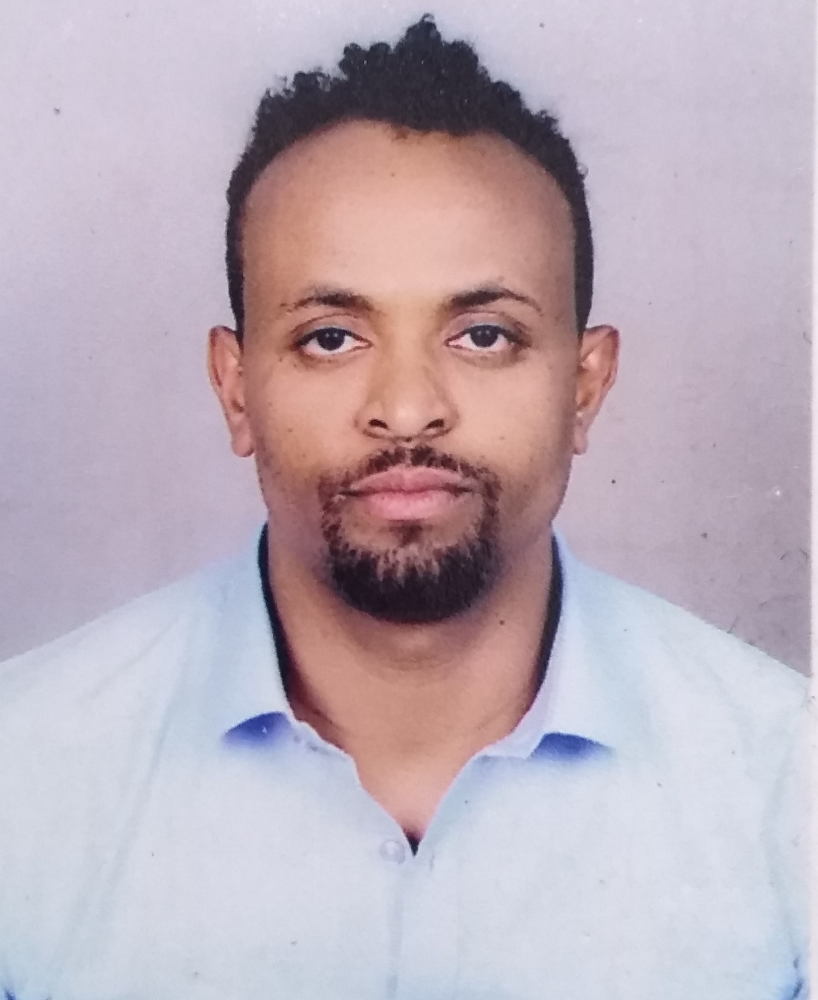

PhD Candidate · Multilingual NLP · Low-Resource Languages · Retrieval-Augmented Generation
Download CVI am a PhD Candidate at the L3S Research Center, Leibniz University Hannover, Germany. My research focuses on multilingual NLP, Information Retrieval, and morphology-aware modeling.
A tokenizer designed for Geez script languages to overcome limitations of standard BPE.
View ProjectLow-resource multilingual system for scalable language engineering.
View ProjectPhD Candidate — Leibniz University Hannover
Assistant Professor — Mekelle University
Lecturer — University of Gondar
AI4SD 2026 Conference
International Journals in Data Science & Mobile Technologies
Email: teklehaymanot@L3S.de
Location: Hannover, Germany